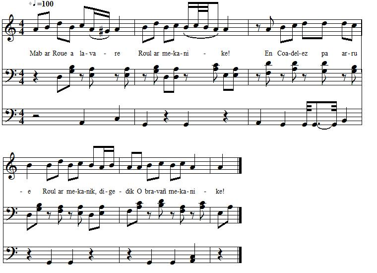

Pennherez Koatelez
L'héritière de Coatelez
The Heiress of Coatelez
Collectée par Théodore Hersart de La Villemarqué,
Tirée du 1er Carnet de Keransquer.
Tirée du 1er Carnet de Keransquer.

Mélodie
Mélodie inconnue remplacée par un
Air publié dans "Musiques bretonnes" par Maurice Duhamel
Recueilli auprès de M. Clec'h à Lanrodec.
Arrangement Christian Souchon (c) 2009
Source: site de M. Pierre Quentel (voir liens)
|
BREZHONEK PENN-HEREZ KOATELEZ [1] p. 61 1. - Dibonjour, bonjour, tud an ti-mañ Kenkoulz d'ar vras ha da re vihan! 2. Pelec'h eo aet femelen an ti-mañ? - Ema d'al laez barzh he c'hambr gwenn ' Tiluziañ he blev melen. 3. - Bonjour, bonjour d'eoc'h , Madelen! P'lec'h eo vouet ar femelen? 4. - Red eo 'deufec'h da Benn-al-Lenn. - Mar oufen 'n hent da Benn-al-Lenn, Me amproufe ar femelen. 5. - Peus ket met heuliañ 'r vinojenn, C'hwi ' gavo 'n hent da Benn-al-Lenn. 6. - Bonjour, bonjour, plac'h Benn-al-Lenn, C'hwi a gan ge, c'hwi a walc'h gwenn. C'hwi a walc'ho din va mouch gwenn? 7. - ' Ganon ket ge, ' walc'hon ket gwenn! - Sellit, plac'hig, ouzh va marc'h gwenn. Ur bridal aouret zo en e benn. 8. - Ne ran foeltr forzh gant ho marc'h gwenn Ha kemend-all gant ho prid wenn. 9. - Sellit, plac'hik, deus va marc'h du! En he dibr zo seiz d'an daou tu. 10. - Ne ran ket foeltr forzh gant mirc'hi, Ha kemend-all a ran gant ho re ! 11. - Deuit ganin, plac'hig, d'ar c'hoat da bourmen Me roy deoc'h sur aour hag arc'hant! 12. Me roy deoc'h sur arc'hant hag aour! C'hwi da birviken na viot paour! 13. - 'Neus ket ezhomm deus hoc'h aour pe arc'hant. Va c'halitez p'eo 'med bout izel, Mar oufe va breur zo 'bale bro Blanfe e sabr en ho kostoù! 14. - Me zo ho preur a bale bro! Zo deuet amañ vit ho amprouiñ. P'hor-bije ouzhin sellet mad... Me m'eus ho anaet deus ho daoulagad! |
TRADUCTION FRANCAISE L'HERITIERE DE COATELEZ [1] p. 61 1. - Bonjour, toute la maisonnée Gens de haute et basse lignée! 2. Où est la dame de ces lieux? - Mais là-haut, dans sa chambre blanche A démêler ses blonds cheveux. 3. - Ah, c'est vous! Bonjour Madeleine! Où donc est votre châtelaine? 4. - Elle lave au Bout-de-l'Etang. - J'irai si l'on me dit comment: Je voudrais la mettre à l'épreuve. 5. - Suivez ce sentier simplement! Il mène tout droit au lavoir. 6. - Bonjour, la fille de l'Etang, Qui chantez gai, qui lavez blanc. Me laveriez-vous ce mouchoir? 7. - Chanter gai, laver blanc? Que non! - Ce cheval blanc, regardez donc La bride dorée qu'il arbore! 8. - Votre cheval blanc je l'ignore. Sa bride blanche tout autant. 9. - Alors voyez ce noir cheval! Sa selle en soie des deux côtés. 10. - Foin des chevaux, en général, Des vôtres en particulier! 11. - Venez vous promener au bois; Vous aurez de l'or, de l'argent! 12. Vous serez riche grâce à moi; Plus jamais pauvre assurément! 13. - A votre or je ne veux prétendre. Moi, d'un petit noble la sur, Mon frère est loin, qu'il vous entende Il vous plante un fer en plein cur! 14. - C'est moi, ce frère voyageur! Je voulais vous mettre à l'épreuve. Si vous m'aviez regardé mieux... Moi, j'avais reconnu vos yeux! Traduction: Christian Souchon (c) 2014 |
ENGLISH TRANSLATION THE HEIRESS OF COATELEZ [1] p. 61 1. - Good day to you all in this house Servants, the old man and his spouse! 2. Tell me, is the young lady there? - She is in the white room upstairs Busy untangling her fair hair. 3. - Good day, Magdalene, excuse me! I've come the young lady to see! 4. - She's at Penn-al-Lenn washing place. - The way thither, please, help me trace: I want to put her to the test. 5. - Of all the paths, here's the best: You just carry on and go west. 6. - Hello, hello, Penn-al-Lenn sprite, You sing gaily, and you wash white. You'll wash my kerchief, am I right? 7. - I will not: your manners are coarse! - Have a look, lass, at my white horse, I mean its gold bridle of course! 8. - For this horse of yours I don't care Nor do I for bridles, I swear. 9. - Just have a look: the horse is black, With a silk cover on its back! 10. - I don't care for nags whatever, And yours is not any better! 11. - Would you come to the nearby wood? I should give you gold if you would! 12. I should give you gold and silver, And you would be rich forever! 13. - Your silver and gold I don't need My station in life may be low, I've a brother abroad. Take heed! He's far away, will stab you though! 14. - I am your wandering brother Who came to put you to the test. You'd know it, had you looked better... Who you are, at once I have guessed! Translation: Christian Souchon (c) 2014 |
NOTES:
|
[1] Le titre Ce titre est indiqué au crayon. Luzel a noté deux versions de cette gwerz qu'il intitule "Ar breur hag ar c'hoar": Cette circonstance a, de toute évidence, été oubliée par l'informateur de La Villemarqué. Elle n'apparaît pas non plus dans la 2ème partie de "Lez-Breizh" qui a également pour thème les retrouvailles entre le frère et la sur et qui peut avoir été inspiré par une des nombreuses versions de l'"Héritière de Coatelez". Ce n'est cependant pas l'avis de M. Donatien Laurent qui ne fait pas ce rapprochement dans la bibliographie de ce chant. [2] Bibliographie (p.251 des "Sources"): Collection de Penguern: - T.89: "Breur ha c'hoar", Taulé,1851 (= Gwerin 5); - T.93, 88: "Koatalez"; - MS. 1013 (Romania): "Breur a ch'oar - Pennerez Coatallez", Lanmeur 1851, (=Revue de Bretagne et de Vendée, 1887,2) Luzel, Gwerzioù 1: "Ar breur hag ar c'hoar", Plouaret, 1849. Kerbeuzec, "Cojou Breiz": Les orphelins de Coetelez, Plougasnoù. - Luzel: Annales de Bretagne III (1887), Pennérès Coadalèz, Plouëc, 1886). - Pérennès: Annales de Bretagne XLV (1938): "Minores Penn-al-lenn", Ergué-Armel, 1937. |
[1] The title The title is written in pencil. Luzel recorded two versions of this lament which he titled "Ar breur hag ar c'hoar" (The Siblings): This circumstance was evidently left out by La Villemarqué's informant. It does not appear either in the second part of the "Lez-Breizh" ballad which also celebrates the reunion of two siblings and might have been inspired by one of the many versions of the "Heiress of Coatelez". Yet this is not the view taken by M. Donatien Laurent who does not mention the ballad in the bibliography of the "Heiress" song: [2] Bibliography (p.251 of "Sources"): De Penguern Collection : - T.89: "Breur ha c'hoar", Taulé,1851 (= Gwerin 5); - T.93, 88: "Koatalez"; - MS. 1013 (Romania): "Breur a ch'oar - Pennerez Coatallez", Lanmeur 1851, (=Revue de Bretagne et de Vendée, 1887,2) Luzel, Gwerzioù 1: "Ar breur hag ar c'hoar", Plouaret, 1849. Kerbeuzec, "Cojou Breiz": Les orphelins de Coetelez, Plougasnoù. - Luzel: Annales de Bretagne III (1887), Pennérès Coadalèz, Plouëc, 1886). - Pérennès: Annales de Bretagne XLV (1938): "Minores Penn-al-lenn", Ergué-Armel, 1937. |
Retour à "Lez-Breizh"
Taolenn